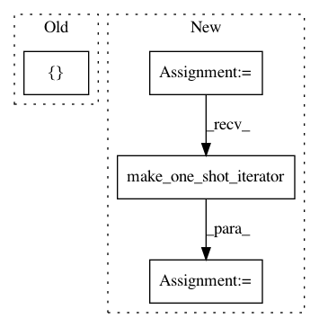

f72e30b86039b53dcced080dc999e1a9fb052c49,src/mjsynth.py,,bucketed_input_pipeline,#,28
Before Change
keep_input = _get_input_filter(width, width_threshold,
length, length_threshold)
data_tuple = [image, label, length, text, filename]
width,data_tuple = tf.contrib.training.bucket_by_sequence_length(
input_length=width,
tensors=data_tuple,
bucket_boundaries=boundaries,
After Change
(element, width_threshold, length_threshold, training, data_tuples),
num_parallel_calls=num_threads)
dataset = dataset.filter(lambda image,
width,
label,
length,
text,
filename,
get_input:
get_input != None)
dataset = dataset.apply(tf.contrib.data.bucket_by_sequence_length
(element_length_func=_element_length_fn,
bucket_batch_sizes=np.full
(len(boundaries) + 1, batch_size),
bucket_boundaries=boundaries))
iterator = dataset.make_one_shot_iterator()
image, width, label, length, text, filename, get_input = iterator.get_next()
label = tf.deserialize_many_sparse(label, tf.int64) // post-batching...
label = tf.cast(label, tf.int32) // for ctc_loss
In pattern: SUPERPATTERN
Frequency: 3
Non-data size: 4
Instances
Project Name: weinman/cnn_lstm_ctc_ocr
Commit Name: f72e30b86039b53dcced080dc999e1a9fb052c49
Time: 2018-06-19
Author: am.lamsal@gmail.com
File Name: src/mjsynth.py
Class Name:
Method Name: bucketed_input_pipeline
Project Name: emedvedev/attention-ocr
Commit Name: 6096c0e6ec4df6a902747059a47e0f6f1bec7d77
Time: 2017-07-21
Author: edward.medvedev@gmail.com
File Name: aocr/util/data_gen.py
Class Name: DataGen
Method Name: gen
Project Name: weinman/cnn_lstm_ctc_ocr
Commit Name: f72e30b86039b53dcced080dc999e1a9fb052c49
Time: 2018-06-19
Author: am.lamsal@gmail.com
File Name: src/mjsynth.py
Class Name:
Method Name: threaded_input_pipeline